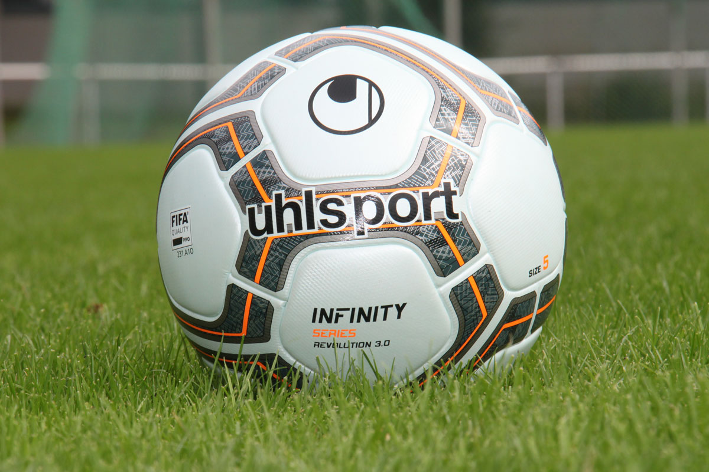

Santos FC e Flamengo se enfrentam pelo Brasileirão em 8 de outubro de 2026, às 19h30 (de Brasília), no Estádio Vila Belmiro (Urbano Caldeira). O confronto reúne duas equipes que chegam ao compromisso com campanhas recentes idênticas nos cinco jogos mais próximos: cinco vitórias, nenhum empate e nenhuma derrota para cada lado.
O duelo será disputado na casa do Santos FC e coloca frente a frente dois times que venceram todos os compromissos considerados antes da partida. A equipe santista chega depois de superar o São Paulo, enquanto o Flamengo vem de vitória sobre o Bragantino.
Como chega o Santos FC
O Santos FC venceu os cinco jogos mais recentes. A sequência começou em 30 de agosto, com o triunfo por 1 a 0 sobre o Corinthians, fora de casa. Em 6 de setembro, a equipe bateu o Internacional por 3 a 2, também como visitante. Depois, venceu o Cruzeiro por 2 a 1 em 12 de setembro, derrotou o Remo por 2 a 1 em 19 de setembro e fechou a série com o 2 a 1 sobre o São Paulo, em 2 de outubro.
Os resultados mostram uma série composta por cinco vitórias na competição: Corinthians 0 x 1 Santos, Internacional 2 x 3 Santos, Santos 2 x 1 Cruzeiro, Remo 1 x 2 Santos e São Paulo 1 x 2 Santos. O time marcou em todos esses compromissos e manteve a sequência positiva até a preparação para o encontro com o Flamengo.
Como chega o Flamengo
O Flamengo também chega ao jogo com cinco vitórias consecutivas nos últimos cinco compromissos. A série começou com o 3 a 0 sobre o Botafogo, em 30 de agosto. Em 2 de setembro, o time venceu o Mirassol por 2 a 0. Quatro dias depois, derrotou o Remo por 1 a 0 fora de casa.
Na sequência, o Flamengo venceu o Corinthians por 2 a 1 em 13 de setembro e o Bragantino por 2 a 1 em 20 de setembro. Assim como o Santos FC, o visitante chega ao confronto depois de somar cinco vitórias, sem empates ou derrotas no período apresentado.
Prováveis escalações
As escalações prováveis não integram as informações disponíveis para este pré-jogo. Por isso, não há nomes de jogadores ou técnicos a apresentar neste bloco.
Retrospecto no Brasileirão
Nos 11 confrontos anteriores entre Santos FC e Flamengo pelo Brasileirão, o Flamengo venceu oito vezes, enquanto o Santos FC saiu vencedor em três oportunidades. Não houve empate nesse conjunto de partidas. O retrospecto, portanto, apresenta vantagem do time carioca na amostra de 11 jogos informada para a competição.
O histórico específico do confronto faz parte do contexto do duelo, mas os números se referem exclusivamente aos 11 encontros anteriores considerados no Brasileirão. Para acompanhar o contexto mais amplo da competição, veja também a história do Campeonato Brasileiro.
Onde assistir
- Data: 8 de outubro de 2026.
- Horário: 19h30, pelo horário de Brasília.
- Competição: Brasileirão.
- Estádio: Vila Belmiro (Urbano Caldeira).
O jogo entre Santos FC e Flamengo está marcado para 19h30 de 8 de outubro de 2026, no Estádio Vila Belmiro (Urbano Caldeira). A partida encerra a preparação apresentada para um confronto entre duas equipes que chegam com cinco vitórias nos cinco compromissos mais recentes.
Nossa posição é objetiva: o Flamengo leva vantagem no retrospecto, mas o Santos FC chega em condições de disputar o confronto em casa, apoiado por uma sequência recente igualmente perfeita.Serviço do jogo
- Santos FC x Flamengo.
- Brasileirão.
- 8 de outubro de 2026, às 19h30 (de Brasília).
- Estádio Vila Belmiro (Urbano Caldeira).
O encontro coloca em campo dois times invictos nos cinco resultados mais recentes informados. O Santos FC venceu São Paulo, Remo, Cruzeiro, Internacional e Corinthians; o Flamengo superou Bragantino, Corinthians, Remo, Mirassol e Botafogo. A bola rola na Vila Belmiro, em uma partida válida pelo Brasileirão.
O duelo na Vila Belmiro
A partida terá o Santos FC como mandante e o Flamengo como visitante. O local definido é o Estádio Vila Belmiro (Urbano Caldeira), e o horário previsto é 19h30, no dia 8 de outubro de 2026. O compromisso integra o calendário do Brasileirão e reúne os dois clubes depois de séries recentes com cinco vitórias para cada equipe.
O último resultado apresentado de cada lado foi positivo: o Santos FC venceu o São Paulo por 2 a 1 em 2 de outubro, enquanto o Flamengo derrotou o Bragantino por 2 a 1 em 20 de setembro. Esses são os jogos mais recentes informados para os participantes do confronto.
Panorama estatístico do confronto
A amostra de 11 partidas anteriores pelo Brasileirão registra oito vitórias do Flamengo e três do Santos FC, sem empates. O número favorece o Flamengo no histórico específico fornecido, enquanto a forma recente apresentada para o jogo mostra cinco vitórias de cada equipe nos cinco compromissos anteriores.
O Santos FC chega ao compromisso com triunfos sobre São Paulo, Remo, Cruzeiro, Internacional e Corinthians. O Flamengo, por sua vez, venceu Bragantino, Corinthians, Remo, Mirassol e Botafogo na mesma extensão de cinco jogos. O duelo reúne, assim, duas sequências recentes sem derrotas ou empates.
Informações principais
O duelo entre Santos FC e Flamengo será disputado em 8 de outubro de 2026, às 19h30 (de Brasília), pelo Brasileirão, no Estádio Vila Belmiro (Urbano Caldeira). O retrospecto dos 11 confrontos anteriores na competição aponta oito vitórias do Flamengo, três do Santos FC e nenhum empate.
Com os dois times somando cinco vitórias nos cinco resultados mais recentes apresentados, o jogo coloca frente a frente sequências de resultados equivalentes antes do apito inicial.
Fechamento
A partida está marcada para a Vila Belmiro, com Santos FC e Flamengo em busca de ampliar suas respectivas séries de vitórias no Brasileirão.
O calendário do confronto está definido para 8 de outubro de 2026, às 19h30, no horário de Brasília. O Santos FC será o mandante diante do Flamengo em mais uma partida do Brasileirão.
Resumo do encontro
O compromisso reúne Santos FC e Flamengo na Vila Belmiro. O Santos FC venceu os cinco jogos recentes informados, e o Flamengo repetiu o mesmo aproveitamento no período equivalente. No histórico de 11 confrontos anteriores pelo Brasileirão, o Flamengo soma oito vitórias contra três do Santos FC, sem empates.
A data do duelo é 8 de outubro de 2026, às 19h30 (de Brasília). O estádio é o Estádio Vila Belmiro (Urbano Caldeira), em partida válida pelo Brasileirão.
Últimas linhas antes da partida
O Santos FC chega ao seu estádio após vencer São Paulo, Remo, Cruzeiro, Internacional e Corinthians. O Flamengo chega como visitante depois de superar Bragantino, Corinthians, Remo, Mirassol e Botafogo. A programação prevê o encontro para 19h30 de 8 de outubro de 2026.
O retrospecto de 11 jogos anteriores pelo Brasileirão favorece o Flamengo, com oito vitórias, diante de três do Santos FC e nenhum empate. A partida será realizada na Vila Belmiro.